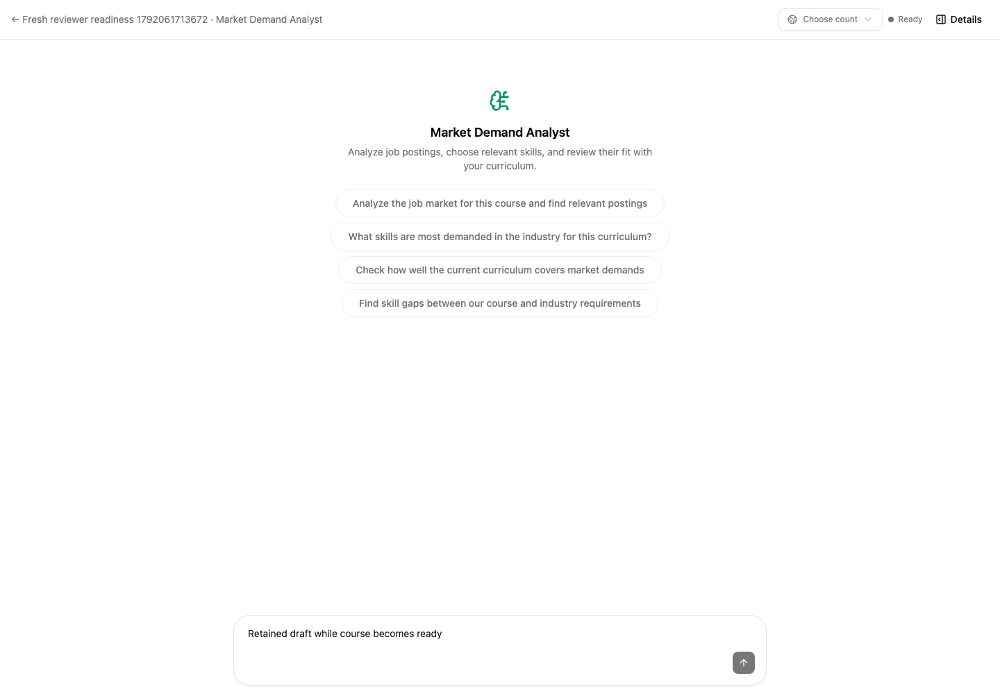
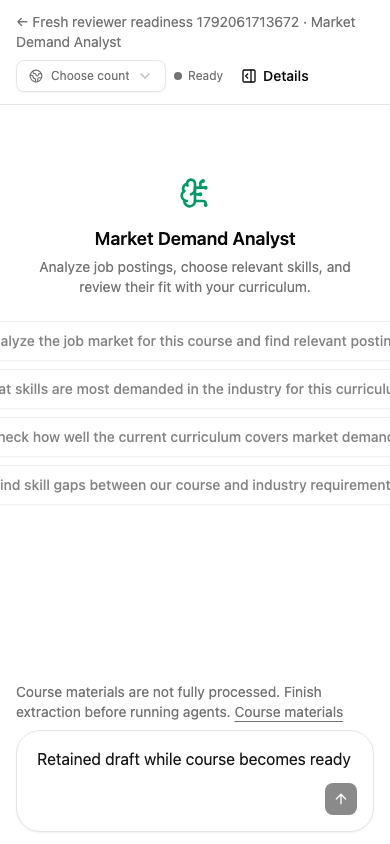

Lab Tutor · Independent fresh-context review · 15 October 2026
Simple Swarm flow review
The missing server-side gate on both concept-normalization stream methods was raised during review and is now present in the current code. Readiness polling blocks and unlocks chat while preserving the draft and materials setup access.
Findings and iteration
Resolved P2 — Concept normalization bypassed material readiness. Both GET and POST /normalization/stream could launch their LLM graph without the new guard. The current diff in backend/app/modules/concept_normalization/routes.py applies Depends(require_materials_ready) to both. The updated route guard was checked statically; coordinator verification covers its endpoint tests.
Existing mobile note — Long prompt suggestions clip at 390px. The screenshot shows the unchanged suggestion-button layout extending outside the conversation viewport. This predates ff2a24c and is not a regression blocker. The new materials notice, recovery link, and composer remain readable.
Behavior exercised
Headless Chromium used the real local UI and API with a reviewer-owned synthetic course. Material transitions were made in the isolated acceptance SQL database; no coordinator fixture courses or model queues were changed.
- Empty course blocks chat sends
- Empty course blocks prompt suggestions
- Blocked course retains material upload access
- Processed files with aggregate insertion still running stay blocked
- Readiness polling unlocks chat without losing the draft
- A later pending material status re-locks chat automatically
- A later pending upload preserves the chat draft
- Readiness transitions do not add an analysis-recovery button
- Blocked mobile workspace has no document horizontal overflow
- Pending materials retain upload setup access
Verification scope
Independent Docker run: 60 passed, 4 failed across LinkedIn parsing, title grouping, provider collection, source orchestration, and durable mapping. All four failures were in source-orchestration tests: one obsolete HeadHunter “error” expectation and three fixtures with no processed course materials. The coordinator assigned those adaptations; this reviewer did not rerun their fixes.
LinkedIn’s real parser at the HTTP boundary passed for Uzbekistan, Kazakhstan, and single-part Uzbekistan locations. Grouping and missing-chapter mapping regressions passed. The dedicated review test database was removed after the run.
Declined to judge: live external provider availability and production deployment were outside this read-only review. Blob-backed upload and extraction retry could not be exercised in this acceptance app because storage is not configured; only the upload affordance and SQL readiness transitions were checked here. No broad architecture refactor was assessed.
Visual evidence



